Half Set Side Quest | Red River Gorge
September 14, 2024
To be a 17th century Dutch merchant.
It's one of those things where I don't remember where I read the story or who I heard it from. Maybe from a dream or a past life? Either way their life and treks excite the hell out of me.
Scotland was a frequent stop on their trade routes. The journey stretched 600 miles across The North Sea's heavy fog, strong winds, and dangerous currents.
Upon arrival, their Scottish business partners greeted the ships on the shore. The two nationalities faced the town still hundreds, if not thousands, of yards away. Fertile sandy soil of pure golf links land stood in their way.
They ventured across the links into town with no particular routing or fashion. This was the norm back then. Sticks, balls , go explore. Today, we call it cross country golf.
After a few days of business, the Scots escorted the Dutch back to their ship in the same friendly fashion they entered. Back across The North Sea they went.
Combining rough and rugged experiences with the game of golf is fun to think about.
The intersection between the two isn't uncharted territory. The pioneers are out there.
Writer Tom Coyne traversed 1000+ miles of Ireland with his half set around his shoulder playing whatever course stood in his way. Lie + Loft founder Luke Davis bikepack from Portland, OR to Monterey, CA with his sticks trolleying behind.
While the dreams of grand golf expeditions lie deep within my soul, we'll focus on the micro level for now.
Davis and his team at Lie + Loft visit natural areas like beaches, forests, and mountains. They place flag sticks in more extreme environments and hit shots accordingly. This subset of content takes golf outside the lines. It's known as Golf is Everywhere.
With a clear and crisp forecast for an upcoming trek to Red River Gorge in Eastern Kentucky, we swapped our tents for the half set of sticks to explore the game in an abstract sense.
Late Friday afternoon our group of 4 dwindled to 2 as ailments and work mishaps popped up. That left Ben and I.
Ben and I played little league together. I pitched and he caught. We had half a dozen catcher's signs for the pitches I would throw, as if I truly had the knuckleball and cokecan curve at 11. Yet we fully embraced toying around with the idea. I'm grateful that spirit hasn't left us just yet.

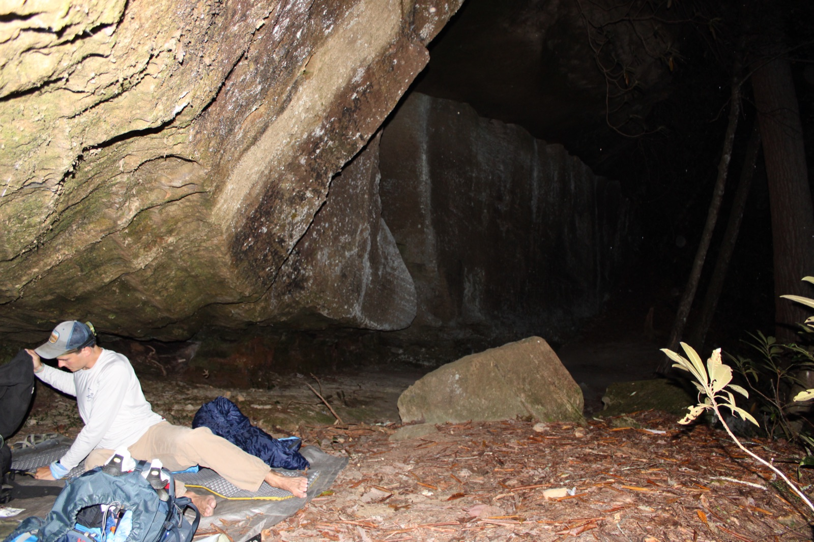
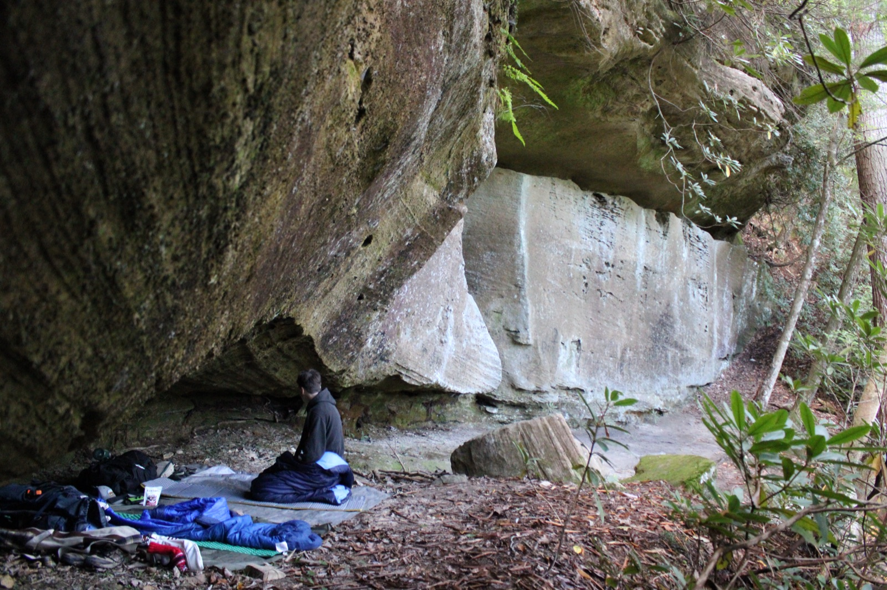
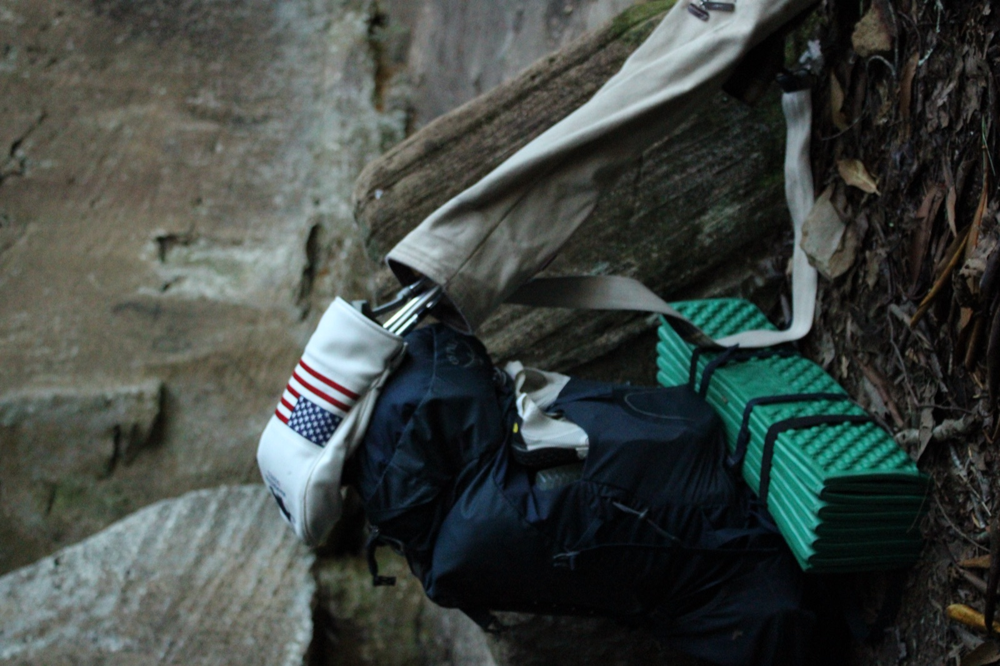
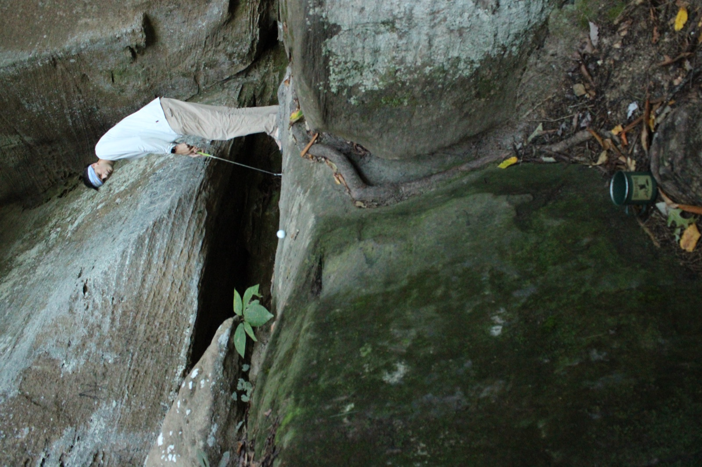
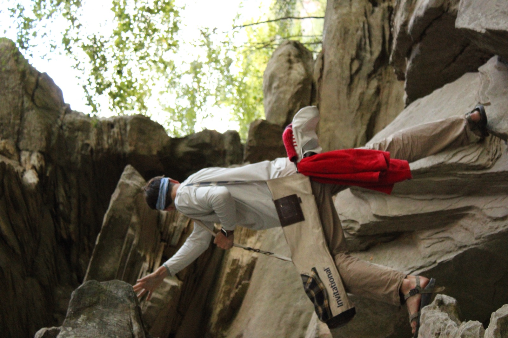
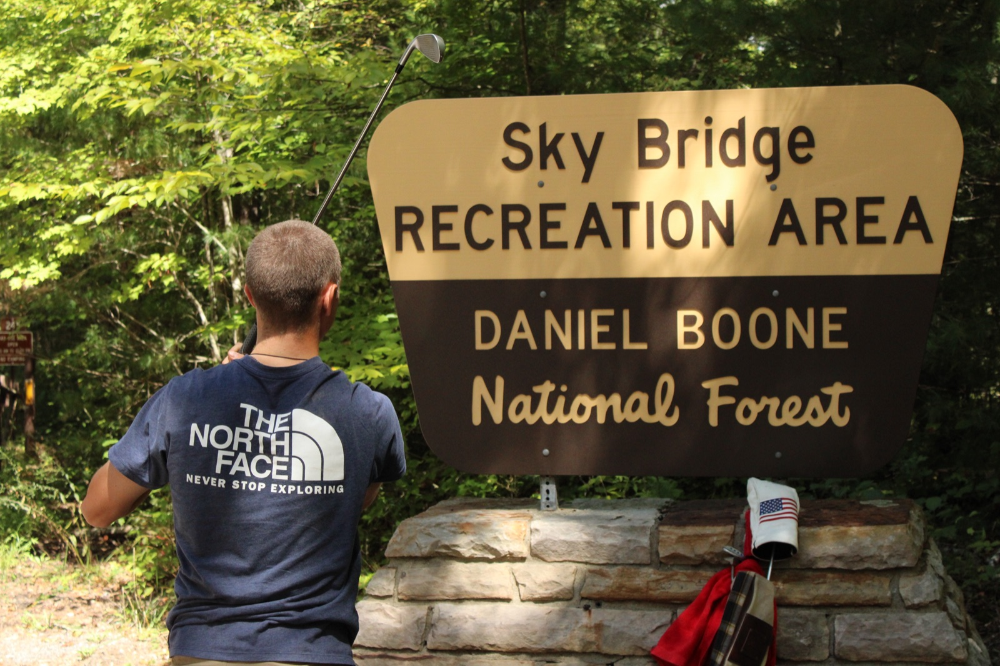
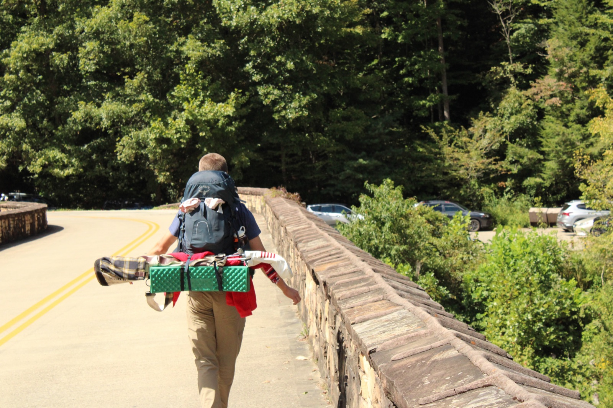
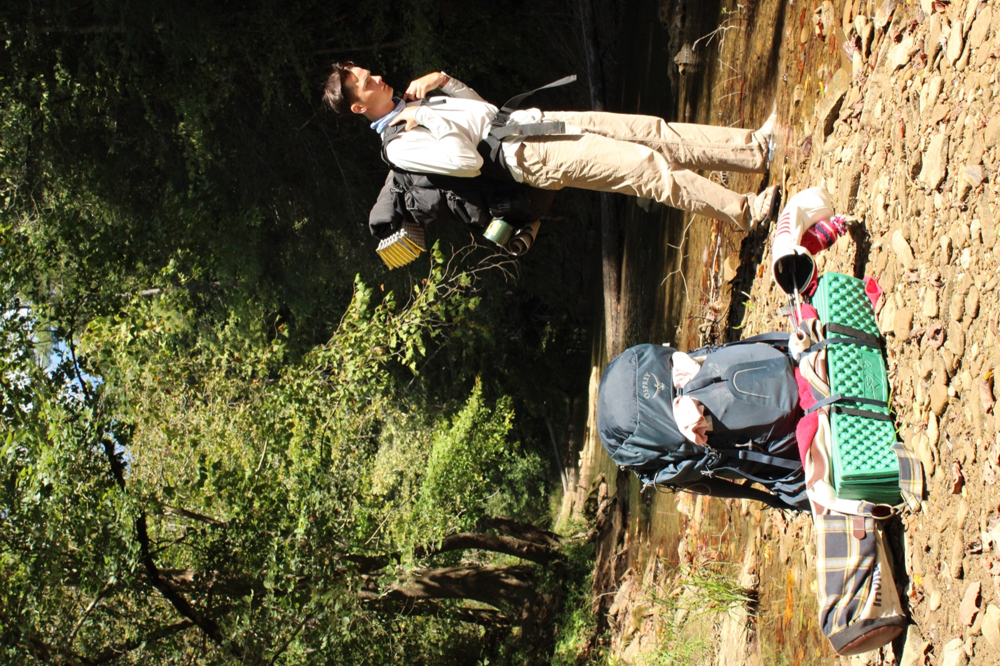
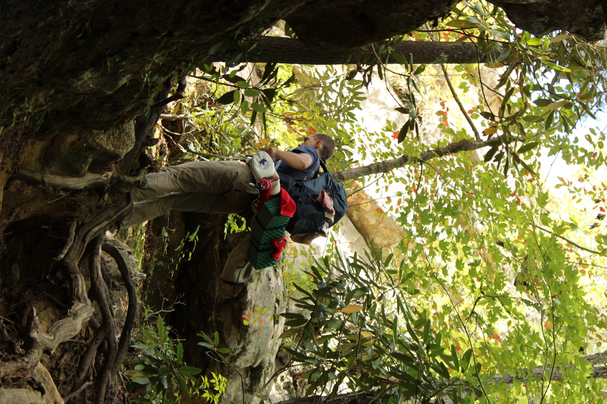

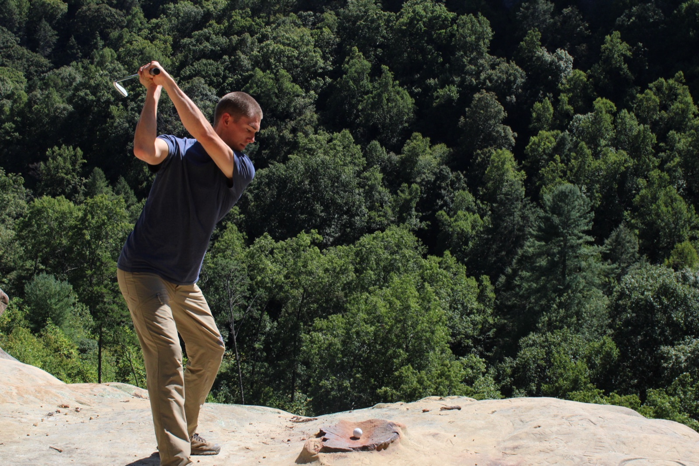
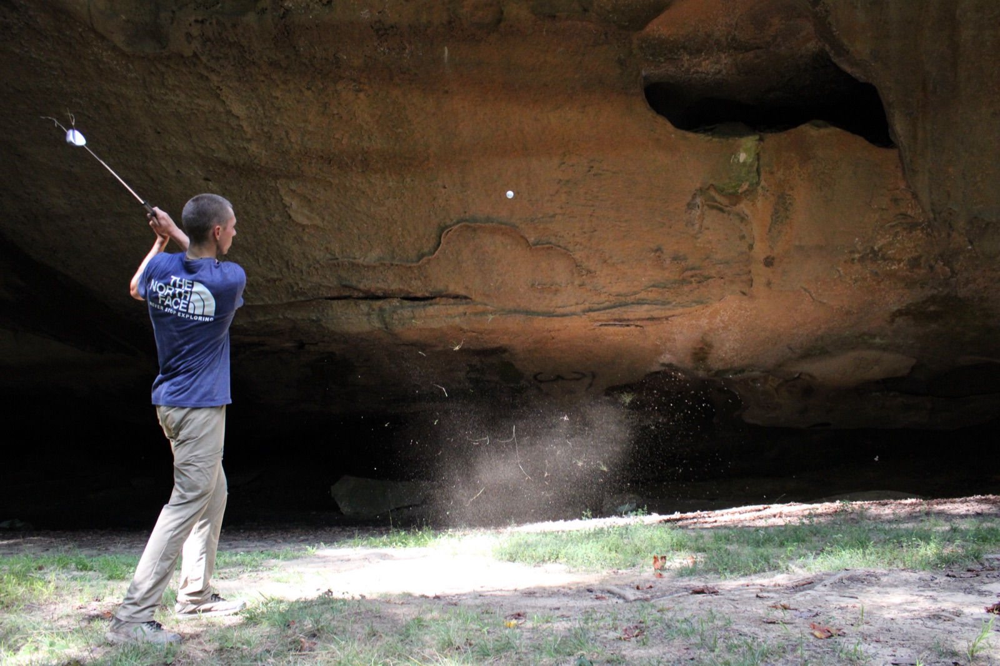

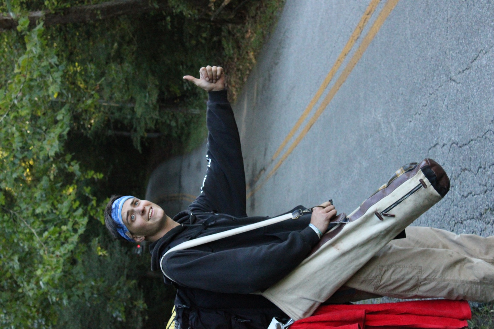
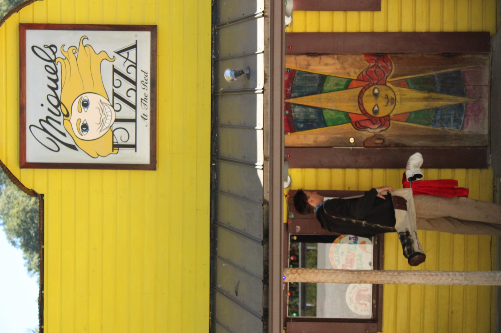